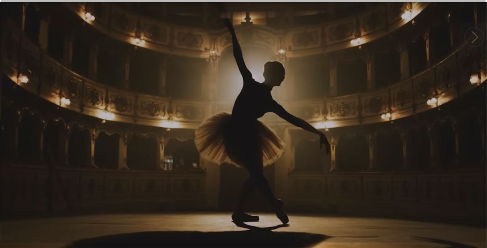

A CREATIVE PORTFOLIO
THE ART OF
BECOMING
Perrine Macaire
PROLOGUE
“When the pursuit of perfection becomes an obsession.”
Entrez dans cette pièce de théâtre et suivez, au fil des actes, les différentes facettes d’une quête de perfection. Découvrez comment le désir de répondre à un idéal de beauté peut peu à peu devenir une obsession, jusqu’à freiner notre créativité, altérer notre identité et nous éloigner de ce qui nous rend uniques.